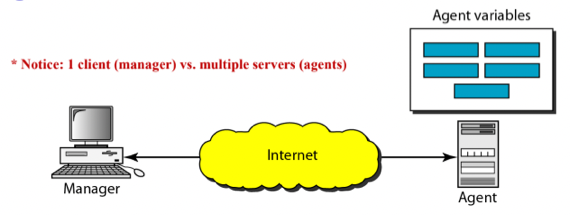
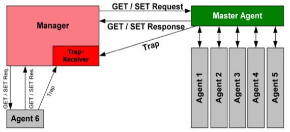
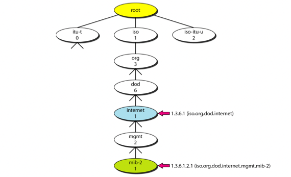
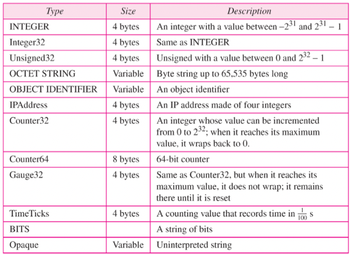
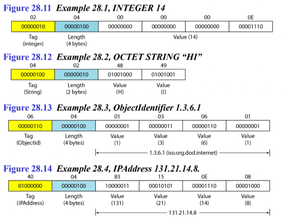
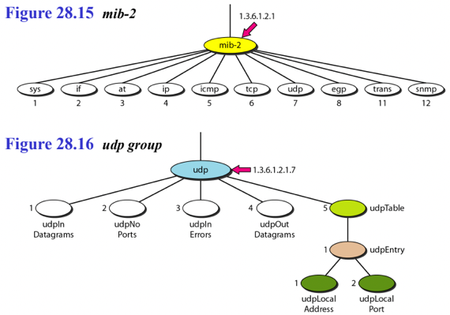
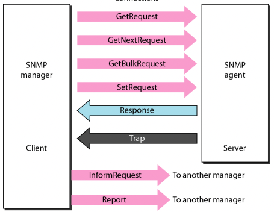
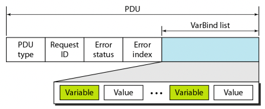
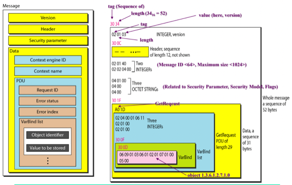
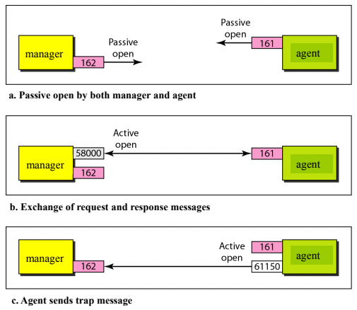

충남대학교 컴퓨터공학과 김상하 교수님의 "컴퓨터 네트워크" 강의를 필기한 내용입니다.
다소 잘못된 내용과 구어적 표현 이 포함되어 있을 수 있습니다.
Network Management
- Network Management는 네트워킹 전반에 걸쳐 초기 세팅을 한다거나 어딘가에서 문제가 생기거나 했을 때 대응을 하는 것을 의미한다고 할 수 있음
- 이렇게 말하면 잘 이해가 안되는데
- 이 5가지 기능 보면 좀 이해가 될거임
- Configuration Management : 어떤 네트워크를 처음 구동시킬 때 네트워크 장비들을 초기화시키는 기능
- Fault Management: 네트워크 장비가 고장나거나 이상행동을 할때 알려주는 기능
- Performance Management: 네트워크의 성능에 대해 체크 - 뭐 전송하는데 얼마나 걸리는지, 어디에 트래픽이 몰리는 지 등 - 하는 기능
- Security Management: 네트워크의 보안성에 대해 체크하는 기능
- Accounting Management: 네트워크 사용량과 관련해서 과금 청구(돈내놔)와 관련된 일을 하는 기능
- Fault, Configuration, Accounting, Performance, Security 앞글자를 따서 FCAPS라 부른다
SNMP
- SNMP(Simple Network Management Protocol) 은 위에서 소개한 Network Management를 하기 위한 프로토콜임
- 여기에서는 Manager-Agent Model을 사용한다

- 그래서 일반적으로 위처럼 구성됨
- 보면 1개의 Manager가 Client 로 기능하고 다수의 Agent가 Server 로 기능하는데
- 약간 지금까지 봐오던 구조와는 다르다 → 일반적으로는 하나의 Server와 Client가 존재하는 식 이었는데 SNMP에서는 1개의 Client가 있고 다수의 Server가 있음
- 이것도 이전에 배운 Client Server의 개념을 되살리면 어떻게 구동되는지 알 수 있다 - SNMP에서는 1개의 Manager가 다수의 Agent들에게 요청을 하고 그 결과를 받아오는 셈
- 여기서 Manager는 SNMP Client가 돌고 있는 컴퓨터를 의미하고 Agent는 라우터를 포함한 모든 네트워크 장비들을 말하게 된다
- 즉, 라우터를 포함한 모든 네트워크 장비를 하나의 Manager 가 관리하고 모니터링하고 있는 셈
- 그래서 Agent에는 몇가지의 변수가 있고 여기에 Management항목들에 대한 값들이 저장되어 있다
- 뭐 위에서 말한 FCAPS와 관련된 변수들이 SNMP Server Process 에 변수로 저장되어 있는 것
- 그리고 Manager는 Agent에게 요청을 보내 해당 변수의 값을 달라고 하거나 세팅하라고 요청한다

- 따라서 위의 그림처럼 되는거임 - Manager는 각 Agent의 상태를 알기 위해 Agent들에게 GET으로 Agent Variable를 달라고 하거나 SET으로 어떤 값을 가지게 강제할 수 있다
- 근데 저기 보면 Trap이라는게 있다 - Manager는 Client고 Agent가 Server라고 했는데 항상 이런 것은 아님 - 중대한 문제가 생겨 Manager에게 경고를 하는 것을 Trap이라고 하고 이때에는 Agent가 먼저 통신을 하기 때문에 Agent가 Server가 되고 Manager가 Client가 되는 것
- SNMP는 Network Management를 하기 위해 SMI와 MIB라는 두 프로토콜을 같이 이용함 - 얘네들은 약간 통신을 위한 규격(표준)을 정해놓은 것이다 - 즉, 다른 프로토콜처럼 통신이 어떤 방식으로 일어나는지에 초점을 맞춘 것이 아니고 정보의 Format을 정한 셈 - 그래서 어찌보면 프로토콜보다는 그냥 표준에 더 가까워보이기도 한다
SMI
- SMI(Structure of Management Information) 은 Agent Variable의 규격에 대한 프로토콜이다
- 이게 뭔소린고 하니
- Agent Variable은 말 그대로 변수고 여기에 정보가 저장된다고 했자네
- 그리고 Agent하나에는 이런 Agent Variable이 여러개가 있고
- 이때 Agent Variable을 어떻게 이름붙일건지(Name)
- 해당 Agent Variable은 어떤 자료형인지(Type)
- 그리고 Agent Variable의 값을 네트워크를 통해 전송하려고 할 때 어떻게 인코딩할 것인지(Encoding)에 대한 규격을 정한 것이다
Name
- 일단 우선 알아야 될 것은 Agent Variable을 Object라고도 부르며 따라서 Object Identifier는 Agent Variable의 Name이라고 받아들이면 된다
- Object ID는 트리 형식으로 작명이 됨
- 뭔소린고 하니

- 약간 이렇게 생각하면 됨 - 카테고리가 있어서 어떤 변수를 특정하기 위해 카테고리를 내려오며 범위를 좁히면서 결국에는 하나를 결정하게 되는 것
- 그래서 Root가 있고, Root에서부터 내려오면서 Label들을 (.)으로 연결하는 식으로 범위를 좁혀오다가 결국에는 Object하나가 특정되는 것
- 그리고 각 Node에는 숫자가 부여되어 있어서 문자열 Label 말고 숫자들을 (.)으로 연결하면 이제 그게 Object ID가 되는 것이다
- 약간 감이 올랑말랑 하제
- 잘 모르겠으면 그냥 DNS마냥 Tree Namespace가 있고 이번에는 Root에서부터 내려오는 식으로 Object의 Name이 부여된다고 생각하면 된다
- 그니까 DNS의 Name이랑 비슷하다고 생각해도 된다 - DNS에서는 Name을 주면 IP가 왔듯이 여기서는 Name을 주면 그에 대한 Object Value가 오게 되는 것
Type
- 이건 뭐 뻔한 얘기임
- Object의 값이 bit 로 표현되어 있는데 이때 이 데이터를 어떻게 해석할지에 관한 것
- 그래서 뭐 언어마다 다양한 타입이 존재하는데 여기서는 ASN1 표준 타입 선언에 몇가지를 추가한 Type을 사용한댄다
- 그래서 Simple Type은 그냥 정수나 문자, 같은 기본 자료형
- Structured Type은 배열이나 구조체인데
- Sequence가 구조체고
- Sequence of가 배열을 나타낸다
- 헷갈리쥬

- 그래서 뭐 이런 타입들이 있댄다
Encoding
- Encoding은 이제 Manager의 요청에 따라 Object의 값을 전달하거나 아니면 Object의 값을 설정하려고 할 때 그 ‘값’들이 네트워크를 따라 이동하게 될 텐데 이때 이것을 어떤 형식으로 주고받을 것이냐에 관한 것이다
- 약간 이렇게 생각하면 됨 - DNS할때는 Name을 보내면 IP가 오니까 타입은 IP고 길이는 4이고 값도 뭐 4byte 값이니까 굳이 Encoding을 정하지 않아도 됐었지만
- 이번에는 Name에 대한 값이 타입도 여러개고 길이도 가변적이기 때문에 타입과 길이, 그리고 실제 값도 묶어서 인코딩한 다음에 전송하게 되는 것이라 생각하면 된다
- SMI는 BEM(Basic Encoding Method) 라는 방법을 이용해 Encoding한다
- 이전에 배운 DER인코딩같은거다 - DER인코딩은 ASN1 형식의 구조체를 Binary로 바꾸는 것 이었고 BEM은 SMI에서 사용하는 구조체(혹은 뭐 배열이나 그냥 값 등)을 Binary로 바꾸는 것이다
- 그래서 BER에는 Tag, Length, Value세개가 들어감
- Tag는 첫 1바이트에 들어가고 여기에는 Type에 대한 값이 들어간다
- Length는 그 다음 1바이트에 들어가고 여기에는 Value의 길이가 들어간다
- 타입이 정해지면 Length가 정해지는 거 아닌가라고 생각할 수 있는데 그렇지 않은 듯
- Type을 정해도 그것의 길이 또한 임의로 지정하는 것이 가능하다
- Value는 말 그대로 값임

- 그래서 위 예시 보면 딱 감 올거임
- 저런식으로 Tag-Length-Value순서대로 묶여서 BER인코딩되고 그것이 통신할때의 값에 대한 포맷이 되는 것
- 뒤에서 실제 예시를 보면 알겠지만 Nested구조를 갖는 것도 가능하다
- 즉, SEQUENCE 7 INTEGER 1 4 STRING 2 H I이런식으로 BER안에 또 다른 BER이 들어가는 식으로 Nested 된 구조를 표현할 수도 있다는 것 기억
MIB
- SMI에서는 그냥 트리 구조를 이용해 Naming을 하자 라고 규격을 정해 놓은 거고
- MIB(Management Information Base) 는 이제 실제로 어떻게 Naming이 되어 있냐 에 관한 것임
- 약간 SMI와 MIB에서 등장하는 Tree구조 Naming방식 기억두면 좋다 - 암호키 Naming방식에서도 이런 Tree구조를 이용한 Naming방식으로 Object ID 규격을 정의하고 있음 - 표준 규격에서 많이 사용하는 방식이더라

- 그래서 위처럼 되는거임
- 일단 MIBv2는 트리상에서 1.3.6.1.2.1에 위치하고 있음 - Tree에 통신에 관한 부분(MIB)만 있는게 아니라 다른것도 다 있나봄
- 그래서 그 중에서 또 udp에 관한 Object ID를 알아내고 싶으면 1.3.6.1.2.1.7 로 가게 되고
- 거기에서 또 아래로 내려가면서 어떤 것에 대한 실제 Object ID가 정의되게 된다
- 아 뭔가 감이 왔다갔다하는데
- 러프하게 생각하면 Tree전체에 Computer Science에서 등장하는 개념들이 계층형태로 다 박혀있고 어떤 하나의 개념을 찾기 위해서는 Root부터 내려오면서 찾으면 되고 찾았으면 그것이 그 개념에 대한 Object ID가 되는 것이다
- 그래서 Agent에 저장될때도 변수의 이름이 저 값을 사용해서 저장되는 셈인거지 - udpTable에 관한 것은 1.3.6.1.2.1.7.5의 이름으로 Agent에 저장되어 있고 Manager는 저걸로 GET이나 SET등을 하게 되는 것
- 그니까 말그대로 이름에 대한 규격인 거다
- 아몰라ㅅㅂ 대충 감은 오시쥬?
SNMP
- 일단 SNMP에서 제일 중요한건 PDU이다

- PDU는 위 그림처럼 8종류가 있는데 HTTP Method같은거라고 생각하면 됨 - 따라서 PDU Type은 Method Type같은놈임

- 그래서 위 그림처럼 하나의 PDU가 구성된다 처음에 PDU Type이 들어가고, 그 다음에 나오는 3개는 몰라도 되고, 마지막에 등장하는 Variable Bind List에는 요청으로 보내는 Variable(Object ID)이나 그것에 대해 응답으로 돌아오는 Variable Value등이 저장되는 것
- 따라서 GET Request에 {Object ID} 이렇게 보냈다면 그것에 대한 요청으로는 {OID, Value}으로 오게 되는 것

- 그래서 전체적인 구조를 보면 위와 같은 모습임
- 일단 여기서 중요한거 첫번째는 PDU가 그거 하나만 달랑 가는게 아니고 Version, Header등을 다 포함한 완성된 메세지에 담겨서 간다는 것이랑
- 구조체로 표현된 메세지가 Nested BER로 인코딩된다는 것이다
- 그래서 위 그림에서 오른쪽 보면 일단 맨 위에 30 34 가 의미하는 바는 SEQUENCE 34, 즉, 전체가 구조체고 34바이트라는 의미인 것
- 그 다음으로 나오는 02 01 03보면 INTEGER 1 3이고 이건 SNMP의 버전이 3임을 나타내는거임
- 그 다음 30 0C는 SEQUENCE 12이고 이 뜻은 이 다음부터 또 Nested된 구조체가 등장한다는 거고 그것의 길이는 12바이트라는 것 - 왼쪽을 참고하면 여기에 이제 Header들이 담기게 된다
- 뭐 이런식으로 저 구조체가 전부 BER로 바뀌어 통신되게 되는것
SNMP Port

- 이건 뭐 간단하다
- SNMP Manager는 162 Well Known Port가 열리고 당연히 이건 SNMP Manager Server의 Port니까 Trap을 수신하는 용도겠지
- SNMP Agent는 161 Well Known Port가 열리고 이것도 SNMP Agent Server의 Port니까 GET이나 SET등을 수신하는 용도인거다
- 그래서 위 그림 보면 이해됨